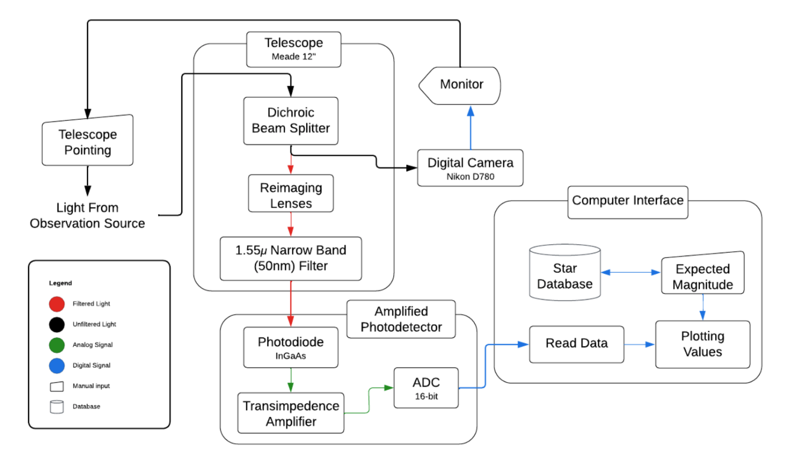

ADC & Microcontrollers
Hello! In this article I’ll be talking about the ADC and microcontroller subsystem in the Psyche DSOC Detection Project. As an overview, ADC stands for ‘Analog to Digital Converter.’
Signals
Electronics– and specifically sensors– measure physical changes and ‘convert’ them into electrical signals. The microcontroller picks up those signals and translates them into a format we can read. We can code microcontrollers to control the sensors to work the way we want them to. Some sensors send out electrical signals as a DC (direct current) signal or an AC (alternate current) signal. DC basically means the signal is either 1 or 0, on or off. On the other hand, AC signals can be a range (1.34, 250, etc.).
ADC & Bits
So for this project, the sensor used is a photodiode, which sends out analog signals. However, the signals it sends are super small, so we must use an amplifier to make the signal more readable for us. But, the microcontrollers used (more on those below) need to be able to read large packets of extremely small data quickly in order to make using the system viable. Basically, you wouldn’t want to wait 5 minutes for the sensor to take a signal, send it to the microcontroller, and be converted for one measurement. We need many measurements for the super small signals from the photodiode in a feasible time frame. That means we need an ADC to help take the signals and send them highly digitized to the microcontroller. The microcontrollers (more below) usually come with an 8-bit ADC, but the one used for the project is 16-bit, meaning the data and resolution is improved.
Microcontrollers
Microcontrollers are somewhat like mini-computers meant for certain computing tasks. For instance, some microcontrollers might take measurements, do mathematical calculations, or drive displays for screens. For this project, we are using some easy-to-acquire and broad-ranging microcontrollers from Arduino and Raspberry Pi. Displayed below are the microcontrollers used and tested by the team, meaning you could use any one of these to build our project for yourself:


Putting It Together
So how does the ADC and microcontroller of your choice tie into the overall project? Below is a copy of the team’s block diagram, where the ADC is found towards the bottom.
Since the whole system is converting between analog and digital signals, that will need to be handled by the microcontroller to convert it into an output that we can read. The photodiode will pick up signals that the Psyche DSOC laser will emit, in the IR (infrared), and will transmit the data as electric signals that are very small. Since we need a bunch of these tiny measurement signals rather quickly, the ADC is able to digitize the signals to send more data to the microcontroller faster than it could do on its own.
Conclusion
An ADC with one of these microcontrollers makes it feasible for us to look for and see the objects in the night sky that we might not be able to see with our eyes (or even a regular telescope). By building this subsystem (instructions and code found here), you will be able to do this project yourself! We would love to hear what you are able to see and if you are able to detect the Psyche DSOC laser on your own!